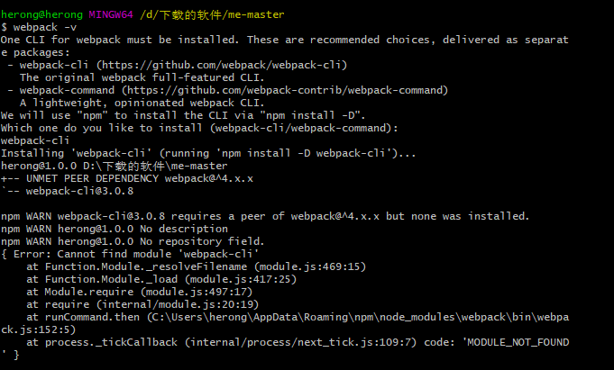

1.要先用git来有没有cnpm -v ；node -v;
2.cnpm install webpack -g 安装完可以webpack -v 看版本
3.然后我看版本的时候报这个错

网上说先安装webpack-cli,但是还是会报错
就可以先$ cnpm install -g cnpm-install-peers
$ cnpm install webpack
$ cnpm install webpack-cli -g就OK了~具体这个里面哪个不需要的我也没有再次安装了，到时候可以再试试
4.打包命令：$ webpack show.js bundle.js
我的webpack是4.16版本的，所以打包时命令应该是：$ webpack show.js -o bundle.js
可以参考
5.require 和 module exports
6.css打包是$ cnpm i style-loader css-loader -D
show.js引用是require('!style-loader!css-loader!../css/style.css');
7.配置webpack.config.js文件，因为版本是4.16.0，所以
//输出的格式
module.exports = {
entry:'./src/js/show.js',
output:{
path:__dirname+'/dist',
filename:'bundle.js'
},
module:{
rules:[
{
test:/\.css$/,
use:[
'style-loader',
'css-loader'
]
}
]
}
}
8.安装第三方库 $ cnpm install jquery --save-dev
9.修改package.json中的启动文件
"scripts": {
"test": "echo \"Error: no test specified\" && exit 1"
}改为
"scripts": {
"build":"webpack"
},然后启动变$ cnpm run build
10.用打包工具将项目部署到服务端$ cnpm install webpack-dev-server --save-dev
.再修改json配置文件
"scripts": {
"start":"webpack-dev-server --entry ./src/js/show.js --output-firlname ./dist/bundle.js" ,
"build": "webpack"
},然后编译一下 cnpm run build 然后cnpm start启动会出来端口号，使用即可
11.文件打包的自动监测
"scripts": {
"start":"webpack-dev-server --entry ./src/js/show.js --output-firlname ./dist/bundle.js" ,
"build": "webpack --watch"
},
然后开两个终端，一个执行cnpm run build(这个便会自动监测，当修改内容了，只要刷新页面即可)；一个执行cnpm start
12.端口号也可以修改 webpack.config.js文件中后面加上
devServer:{
//修改端口号
port:8081
}然后重新启动cnpm start
13.url-loader file-loader
14.es6转es5的方法（因为vue文件中是支持es6，但是浏览器只兼容es5，所以要将es6转化为es5）
npm install babel-core babel-loader babel-preset-es2015 babel-plugin-transform-runtime --save-dev
"babel":{
"presets": ["es2015"],
"plugins": ["transform-runtime"]
}这个配置在package.json中
webpack.config.js中配置如下
{
test:/\.js$/, // 将.js文件中的es6语法转成es5语法
use:['babel-loader'], //limit限制图片大小，小于20k的图片均被打包到build.js中
exclude:/node_modules/
},
var htmlwp = require('html-webpack-plugin');
plugins:[
new htmlwp({
title:'首页', //生成的页面标题 首页
filename:'index.html', //
template:'index1.html', //根据index1.html这个模板来生成
})
]